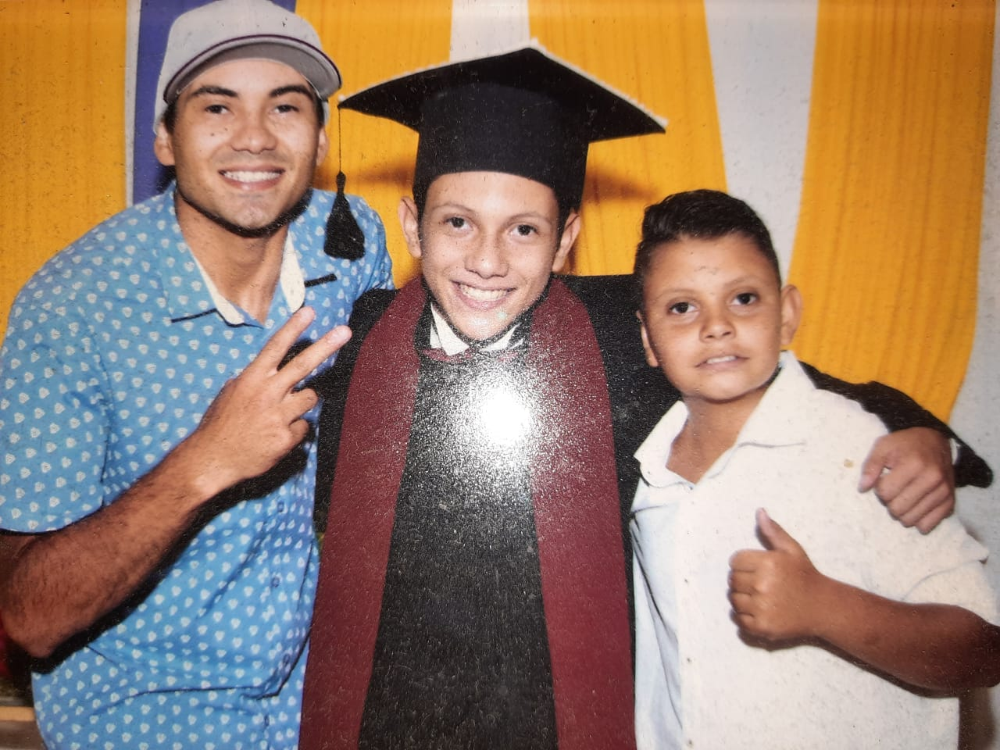

Meu nome é Kevin Nunes, tenho 17 anos e moro no
último bairro de Guarulhos em sentido ao Rio de Janeiro.
Minha casa está localizada em uma região cujo acesso
à praia é bem fácil, o que torna bem perigoso quando, nas
festas em família, meus tios decidem ir à praia.
Kevin Nunes
Minha foto favorita até o
momento
(Para quem não
percebeu)
Eu gosto bastante de resolver desafios e charadas, tudo
o que eu não conheça ou que pareça complexo a primeira
vista me chama a atenção, talvez por isso eu goste tanto de
xadrez.
Eu tenho dois irmãos, um
mais novo e um mais velho. O
mais velho tem 10 anos de
diferença de mim, ou seja, ele
tem 27 anos, já é casado e
mora com a esposa. O meu
irmão mais novo, tem 2 anos
de diferença logo, ele tem 15
anos; esse tem o quarto ao

Meus irmãos na minha formatura do fundamental
lado do meu, e o hobby favorito dele é me irritar sempre quando
pode.
Eu, graças a Deus, moro com meus pais: Kelly e Kleber;
ambos são bem rígidos em relação a minha educação (Tanto
acadêmica quanto comportamental) e, por isso, devo tudo o
que sou hoje, e o que serei um dia, a eles.